Open room grows with the old rules on, then shrinks as they come off
Batch 2 scored only open room. On its own that failed: the nest shrank. With the old ant's roof and room rules phased out over rounds 6 to 20, open room at round 15 was six times batch 1's (median 168 open cells against 28), then lost about two thirds of that as the rules came off. By round 23 it was still about twice batch 1's. The hand-built ant has about 730 to 1,000 open cells.
The pictures also show why the nests fill. On the same world the trained colony brings home about 8 times the hand-built ant's food (27,165 deliveries against 3,323), but its bigger brains burn most of it. What fills the nest is the little that is left over. The trained store grows every 10,000 frames, from 18 cells to 472 by the end, while the hand-built ant's store stays between 5 and 41 because its colony eats it back down.
Median open nest cells at round 15 and round 23, old rules plus open-room score. Batch 1's rules arm: 28 → 26.
Colonies with more open room at round 23 than batch 1's rules arm. Cost: food home down in 20 of 29 pairs, crater 13 against 6, 3 colonies died out.
Stored food cells at the end on the same world, trained colony against the hand-built ant. The trained store only ever grows.
Old rules + open-room score (batch 2)
The three colonies with the most open room at round 23, then the median colony. Each pair is round 15 (rules about one third on) and round 23 (rules off).
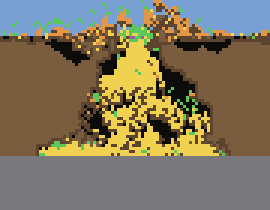
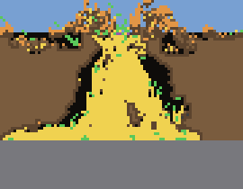
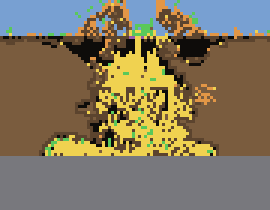
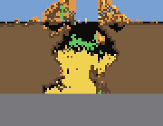
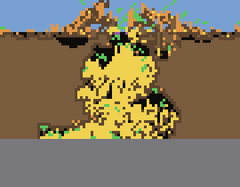
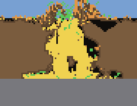
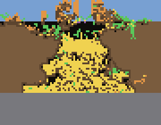
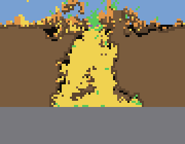
Old rules + the old size score (batch 1), for comparison
Same layout. Under the old score the extra digging filled with food from the start.
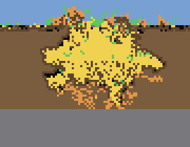
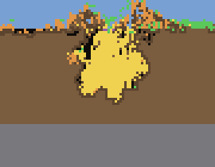
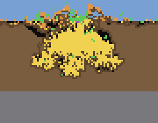
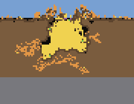
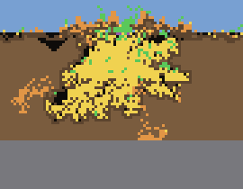
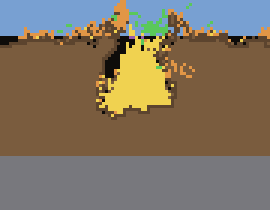
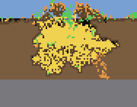
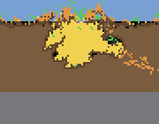
Next
Batch 3 is running now: the same arm over 48 rounds, with the rules phased out more slowly (rounds 8 to 40), as you suggested. A second arm also scores rooms by open cells only. After that I want selection to count stored food that just sits in the nest against a colony, so a colony that eats its store down, as the hand-built ant does, does better. That attacks the pile directly.